Estructura de datos con la infromación necesaria para hacer las llamadas al servicio, incluye: objeto de .NET (wrapperReference), identificador de la fuente de datos (dataSourceID), identificador del nodo de subida (nodeID), el numero de transacción (transaction), el identificador del mapa de atributos (layoutID), la version del mapa (layoutVersion), el identificador de la operacion (operationID) y el identificador de la estación (stationID).
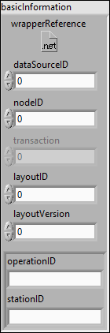
Estructura de datos utilizada para indicar los atributos. Internamente tiene in identificador (id) y un valor (Valor).
Estructura de datos utilizado para identificar a una pieza mediante su identificador (unitID) y el tipo (unitType/WERS).
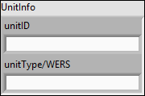
Estructura de datos para crear el objeto .NET y la estructura de BasicInformation, incluye: identificador de la fuente de datos (datasourceID), del nodo de subida (nodeID), del mapa de atributos (layoutID), la version del mapa de atributos (layoutVersion), el identificador de la operacion y estacion (operationID y stationID), la dirección IP del servidor de QTS (serverQtsIP) y un valor de verdad para indicar si es CoPorcessor o HandHeld (isCoProcessor).

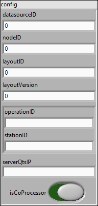
Enumerador para identificar los posibles valores del atributos (partTypeCode).
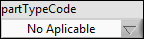
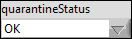
Enumerador usado para identificar los posibles valores del atributo (Result)

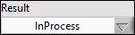
Enumerador utilizado para identificar los posibles valores del atributo (UnitClassification)
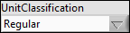
Estructura de datos usada para indicar los identificadores de una operación: (operationID) y (stationID).
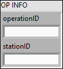
Estructura de datos con los paramertros necesarios para hacer las peticiones de cuarentena: (descripcion) una breve explicacion de porque esta en ese estado, (operacion) operacion que publicó ese estado, (estado) estado en el cual se encuentra (Cuarentena, Chatarra, OK o ERROR), (fecha) la cual indica cuando se publicó ese estado y (unitInfo) identificador y tipo de la pieza.
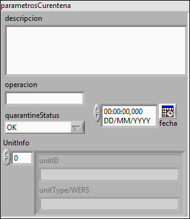
Estructura de datos que incluye todos los parametros que pueden ser necesarios para hacer las peticiones relacionadas con el birthHistory: (dataDTS) fecha en la que se procesa la pieza, (palletID) identificador del pallet, (partData) DESCONOCIDO, (partTypeCode) DESCONOCIDO, (partTypeCodeSpecified) valor de verdad que indica si ha sido especificado el partTypeCode, (UnitClassification) indica que tipo de pieza es(regular, master, calibre, devuelta por el proveedor, etc), (UnitInfo) identificador y tipo de la pieza que se reporta y (Result) resultado del paso de la pieza por la estacion y operacion.
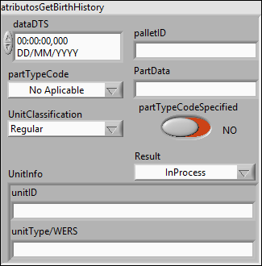
Estructura de datos que inlcuye los parametros necesarios para hacer las peticiones del GetOperationINFO: (UnitInfo) identificador y tipo de la pieza que se quiere consultar, (OPINFO) array de identificadores de operaciones y estaciones.
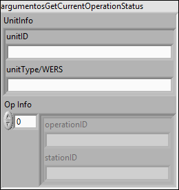
Estructura de datos que incluye los parametros necesarios para hacer las peticiones de GetProcessDataHistory: (stationID) array de identificadores de estaciones, (maxRows) maximo de respuestas que queremos, (fromDate) desde que fecha queremos los datos y (toDate) hasta que fecha los queremos, estos dos ultimos parametros son opcionales.
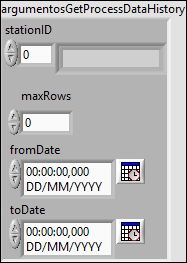
Estructura de daot que inclute los parametros necesarios para hacer la peticion de TestNewSettingsDatabaseConnection: (connection) DESCONOCIDO y (provider) DESCONOCIDO.
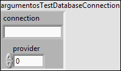
Estructura de datos que incluye los datos devueltos por las peticiones de Cuarentena: (Cuenta de Reutilizacion) indica cuantas veces una pieza ha sido reutilizada, (Descripcion) una breve explicacion del porque de ese estado, (Estado) indica en que estado se encuentra la pieza (Cuarentena, Chatarra, OK o ERROR), (IDCuarentena) identificador de esa cuarentena, (Nombre de la cuarentena) nombre que se le asigna a la cuarentena, (UnitID) identificador de la pieza, (UnitType) tipo de la pieza y (mensaje) texto enviado por el servidor indicando como ha transcurrido la peticion.
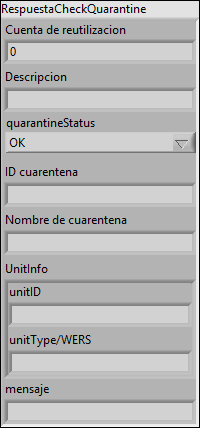
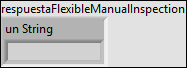
Estructura de dato con los atributos devueltos por la peticion de GetAllStations: (ID) identificador de la estación y (Descripcion) una breve explicación de la estacion y su funcion

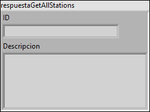
Estructura de datos con los atributos devueltos por las peticiones de BirthHistory: (dataDTS) fecha en la que se trabajo en la pieza, (opereationID) identificador de la operacion, (stationID) identificador de la estacion, (quarantineStatus) estado de la cuarentena, (partData) DESCONOCIDO, (unitID) identificador de la pieza, (unitType) tipo de la piezaz y (mensaje) mensaje que envia el servidor para saber como ha transcurrido la peticion.
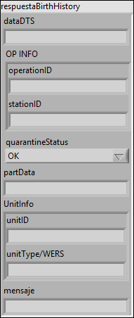
Estructura de datos que incluye los atributos devueltos por el servidor con las peticiones de OperationINFO: (FixtureNumber) DESCONOCIDO, (LastMachiningOperation) identificador de la operacion que se ha consultado y la ultima que ha trabajado con esa pieza, (MachiningSerialNumber) identificador de la estacion, (MachiningDateTime) fecha en la que llevo a cabo el proceso, (OperationData) DESCONOCIDO, (Operationstatus) indica como ha sido el proceso sobre esa pieza, (Atributos) array de atributos que ha subido esa estacion sobre esa pieza, (mensaje) mensaje que envia el servidor indicando como ha resuleto la peticion
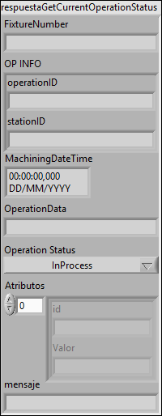
Estructura de datos que inlcuye los codigos que identificcon los estados de un FMI (Flexible Manual Inspection): (codigoAprobado), (codigoIncompleto) y (codigoRechazado).
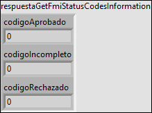
Estructura de datos que incluye los atributos devueltos por el servidor al hacer las peticiones de GetProcessDataHistoy: (operationID) identificador de la operacion, (stacionID) identificador de la estación, (PartTypeCode) DESCONOCIDO, (processDateTime) fecha en la que se trabajo en esa pieza, (palletID) identificador del pallet, (statusCode) estado de la operacion relacionada con esa pieza, (unitID) identificador de la pieza, (unitTypeCode) tipo de la pieza WERS y (uploadDateTime) fecha en la que se subió al servidor los datos.
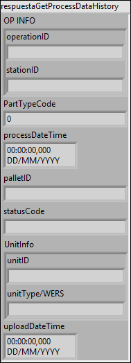
Estructura de datos que incluye los atributos que devuelve el servidor al hacer la consulta de LookUpforParent: (hasParent) valor de verdad qie indica si tiene un ancestro, (parentUnitID) identificador del ancestro y (parentUnitType) tipo del ancestro.
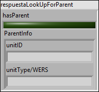
Estructura de datos que incluye los atributos que devueve el servidor al hacer la consulta PartUsage: (quarantineName) nombre de la cuarentena, (QuarantienaStatus) estado de la cuarentena (OK, cuarentena, chatarra o ERROR), (reuseCount) cantidad de veces que se ha reutilizado esa pieza, (unitID) identificador de la pieza y (unitType) tipo de la pieza.
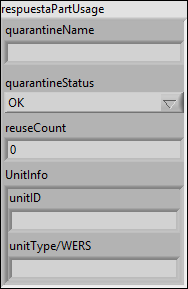